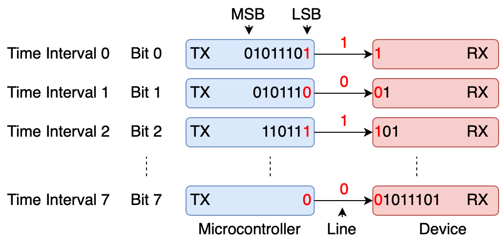

class: title-slide count: false .logo-title[] ## ELECTENG 311 # Electronics Systems Design ### UART Communication .TitleAuthor[Duleepa J Thrimawithana] --- layout: true name: template_slide .logo-slide[] .footer[[Duleepa J Thrimawithana](https://www.linkedin.com/in/duleepajt), Department of Electrical, Computer and Software Engineering (2022)] --- name: S1a # Learning Objectives - Why do microcontrollers have to communicate? - Communication protocols and categorization - Commonly used communication protocols - Peripheral I/O used to implement communication - Fundamentals of UART communication - Understanding baud rate and data rate - What do the waveforms for a UART communication look like? - How to develop code to implement UART communication on an ATmega328P - Format of a data frame suitable for the project --- name: S1b # Lecture Quiz - The lecture quiz is now available on Canvas - Quiz is available for 3 days and allows 3 attempts - Best of the 3 attempts taken as the final score --- class: title-slide layout: false count: false .logo-title[] # How do Microcontrollers Communicate? ### Protocols and Categorization --- layout: true name: template_slide .logo-slide[] .footer[[Duleepa J Thrimawithana](https://www.linkedin.com/in/duleepajt), Department of Electrical, Computer and Software Engineering (2022)] --- name: S2 # Why Communicate? .center[] - A microcontroller seldom works in isolation - In a typical system, a microcontroller is expected to share information with other devices around it - To share information, microcontrollers need to communicate with other processors, modules, sensors, displays, etc. - The communication can be for the functioning of the circuit (e.g. reading a temperature sensor), or for debugging and diagnostics (e.g. logging data to a PC) --- name: S3 # What are Communication Protocols? - Communication with a microcontroller can be implemented in different ways - To communicate the transmitter and receiver must agree on a specific communication protocol - Analogous to a spoken language, a protocol defines how information is communicated by varying a physical quantity, called the transmission medium - Protocols can be implemented in software or hardware - Transmission mediums could include voltage, current, light, RF waves, acoustic waves, etc. .center[] --- name: S4 # Data Transmission Modes - Transmission modes can be broadly categorized as simplex/duplex, synchronous/asynchronous and serial/parallel - In simplex implementations data is transferred from A to B only while in full-duplex implementations data is transferred from A to B and B to A simultaneously - In half-duplex implementations data is transferred from A to B or B to A, but not simultaneously - Duplex implementations allow bidirectional communication, but could require more channels (e.g. a wire each for send and receive) .center[] --- name: S5 # Synchronous vs Asynchronous Transmission .center[] - In synchronous mode a separate signal is used to indicate the start of each piece of data being transmitted - Often this signal is called a clock signal, like the clock used in synchronous digital circuits - Require more channels (e.g. separate clock wire) but have lower overhead and higher throughput - In asynchronous mode a special “sync” event is transmitted on the data line to provide a reference point in time - Need to have a common understanding of time, and therefore is vulnerable to variations --- name: S6 # Serial vs Parallel Transmission .center[] - In serial mode only one symbol is sent at a time while in parallel multiple symbols are sent simultaneously - Parallel mode can send more data at a time, but require more channels (e.g. one wire per bit) - A “symbol” is the data sent each time interval - In a digital (binary) system there are only two symbols, ‘0’ and ‘1’, which are referred to as bits - There are many different communication protocols and each follow different data transmission modes - For example a certain protocol could implement half-duplex, synchronous, parallel communication --- name: S7 # Common Communication Protocols - There are many more parameters which define a communication protocol - We have just looked at some of the major ones - The embedded industry has adopted a number of common communication protocols - Serial Peripheral Interface (SPI) - Implements full-duplex, serial and synchronous communication - Inter-Integrated Circuit (I2C) - Implements half-duplex, serial and synchronous communication - Controller Area Network (CAN) - Implements half-duplex, serial and asynchronous communication - Universal Asynchronous Receiver Transmitter (UART) - Implements full-duplex, serial and asynchronous communication - Universal Serial Bus (USB) - Implements full or half duplex, serial and asynchronous communication --- class: title-slide layout: false count: false .logo-title[] # UART Communication ### Fundamentals Principles --- layout: true name: template_slide .logo-slide[] .footer[[Duleepa J Thrimawithana](https://www.linkedin.com/in/duleepajt), Department of Electrical, Computer and Software Engineering (2022)] --- name: S8 # Universal Asynchronous Receiver Transmitter - UART protocol is considered one of the simplest, cheapest and widely used - Commonly used for low data-rate applications like GPS, sensors, modems, etc. - Data goes out on the transmit (TX) line and comes in on the receive (RX) line - The TX on microcontroller connects to RX on the device it is communicating with - Implements full-duplex, serial and asynchronous communication - The microcontroller and the device are connected using 3 lines/wires (TX, RX and a ground) - If only needing simplex communication, 2 lines/wires are sufficient (ground, and TX/RX) - There are extensions to the protocol which add flow control and synchronous transmission (i.e. USART) .center[] --- name: S9 # UART Communication in Your Project .center[] - The MCU of the flyback convert needs to communicate with a PC - A USB-UART module is provided to interface the MCU with a PC - You need to use the UART peripheral to send data to and receive data from a PC - Measured V<sub>out</sub> is sent to PC and V<sub>ref</sub> received from PC is used as reference --- name: S10 # UART Data Transmission - When transmitting data through UART, each bit in a byte of data is sent at a time in a sequential fashion along the wire/line that connects TX to RX of the two devices - A shift registers is used to convert the byte into individual bits to send during each time interval - The Least-Significant-Bit (LSB) is transmitted first - UART on the receiving device receives each bit in sequence and reassembles them into the original byte .center[] --- name: S11 # UART Frame Format - Each data byte transmitted is preceded by a start-bit, which is indicated by a logic "0" - The start-bit (“sync” bit) tells the receiver when to expect a data byte from the microcontroller - Each data byte transmitted is ended with at least one stop bit, which is indicated by a logic "1" - The stop bit(s) ensures the receiver can detect the next start bit - The “idle” state (i.e. when not sending any data) of the line is logic "1" - This is historical from using UARTs for telegraphy - An optional parity bit may be included before the stop-bit(s) - The parity bit allows the receiver to detect some instances of corruption - “[data bits]N[stop bits] [parity type if any]” naming scheme used - E.g. “8N1 with odd parity” means 8 data bits are sent then an odd parity bit and 1 stop bit .center[] --- name: S12 # UART Waveforms (PI) .center[] - A UART “frame” or “packet” composes of a start bit, data bits, parity bit (if used), and a stop bit (or 2) - Bits are represented by voltage levels VCC (for logic "1") and 0V (for logic "0") - Least-Significant-Bit (LSB) is transmitted first --- name: S13 # UART Waveforms (PII) .center[] - A UART “frame” or “packet” composes of a start bit, data bits, parity bit (if used), and a stop bit (or 2) - Bits are represented by voltage levels VCC (for logic "1") and 0V (for logic "0") - Least-Significant-Bit (LSB) is transmitted first --- name: S14 # UART Baud Rate .center[] - The amount of time between each bit being transmitted is determined by the baud rate \\[ \text{Time per Bit} = \frac{1}{\text{Baud Rate}} \\] - Standard baud rates are 4800, 9600, 19200 etc. - Technically you can use any baud rate but not all are supported by a given devices --- name: S15 # Baud Rate vs Data Rate - The time taken to send one bit is set by the baud rate - Total bits sent per frame include the start bit, data bits, parity bit (if used), and a stop bit (or 2) - As an example, consider an 8N1 with no parity scheme - The UART frame would consist of 1 start bit, 8 data bits and 1 stop bit - Therefore, we would need to send 10 bits per frame of which only 8 are data bits - The data rate in bits per second (bps) when using UART communication is therefore \\[ \text{Data Rate} = \frac{\text{Data Bits per Frame}}{\text{Total Bits per Frame}} \times \text{Baud Rate} \\] - The time taken to transmit a certain number of data bits is therefore \\[ \text{Transmission Time} = \frac{\text{Data Bits to Transmit}}{\text{Data Rate}} \\] --- name: S16 # Example: Sending 80 Bytes Over UART .questions[ The UART of a microcontroller is setup to transmit data using 9600 baud, 8N1 with odd parity. The microcontroller transmits 80 bytes of data consecutively through this UART to a computer. Determine the following, - Time take to send a bit in a UART frame - Number of bits transmitted per UART frame - Data rate in bps - Time taken to send 80 bytes of data ] --- name: S18 # UART Waveform - A UART transmission sent from the ATmega328P is captured using an oscilloscope - The ATmega328P is transmitting “01011101” (0x5D) using 9600 baud, 8N1, with no parity .center[] --- class: title-slide layout: false count: false .logo-title[] # The ATmeage328P UART ### Configuring and Using --- layout: true name: template_slide .logo-slide[] .footer[[Duleepa J Thrimawithana](https://www.linkedin.com/in/duleepajt), Department of Electrical, Computer and Software Engineering (2022)] --- name: S19 # ATmega328P USART Peripheral - Supports full duplex operation - Asynchronous or synchronous communication - Has a high resolution baud rate generator - Supports 5, 6, 7, 8, or 9 data bits - Supports 1 or 2 stop bits - Odd or even parity generation and checking supported in hardware - Data over-run and framing error detection - Noise filtering including false start bit detection - Transmit (TX) complete, TX ready, and Receive (RX) complete interrupts - When using a 16MHz system clock, supports up to 1M baud --- name: S20 # ATmega328P USART Pins - In the ATmega328P the USART0 Receive (RX) and Transmit (TX) pins are fixed - RX pin is PD0 (pin 30) while TX pin is PD1 (pin 31) - By default the bits of the DDRD register that corresponds to these two pins are configured in the correct mode (input for RX, output for TX) when we enable the UART peripheral .center[<img src="img/328PPins.png" width="300">] --- name: S21 # ATmega328P USART Implementation .center[] --- name: S22 # ATmega328P USART Registers - The ATmega328P only has one USART and this is named USART0 - Since we use asynchronous mode, in lectures we will refer to USART0 as UART0 - There are 5 registers associated with UART0 <table class="tg" style="undefined;table-layout: fixed; width: 600px; margin-left:auto; margin-right:auto;"> <colgroup> <col style="width: 200px"> <col style="width: 400px"> </colgroup> <thead> <tr> <th class="tg-dzaw"><span style="color:white">Register</span></th> <th class="tg-dzaw"><span style="color:white">Functionality</span></th> </tr> </thead> <tbody> <tr> <td class="tg-jayl">UDR0</td> <td class="tg-jayl">UART0 Input/Output Data Register</td> </tr> <tr> <td class="tg-sabo">UCSR0A</td> <td class="tg-sabo">UART0 Control and Status Register A</td> </tr> <tr> <td class="tg-jayl">UCSR0B</td> <td class="tg-jayl">UART0 Control and Status Register B</td> </tr> <tr> <td class="tg-sabo">UCSR0C</td> <td class="tg-sabo">UART0 Control and Status Register C</td> </tr> <tr> <td class="tg-jayl">UBRR0</td> <td class="tg-jayl">UART0 Baud Rate Register</td> </tr> </tbody> </table> - UDR0 register contains the UART data - The remaining four registers are used to control the peripheral - Some fields are set by the user to control the operation - Some fields are set by the UART to indicate its current state --- name: S23 # UDR0 Register .center[] - The transmit data buffer (TXB) and receive data buffer (RXB) registers share the same address - The register accessed depends on whether a read or write is executed by the code - When setup to transmit data - The code loads the data byte to transmit into the TXB register through UDR0 - When the transmit shift register is empty the data in TXB register will be loaded automatically into the transmit shift register - Each bit in the transmit shift register will be automatically transmitted one at a time as [we learnt previously](#S10) - When setup to receive data - Once the receive shift register receive a data byte, it is automatically copied into the RXB register --- name: S24 # UCSR0A Register .center[] - RXC0: *Receive Complete* flag is set when a new data frame is received - TXC0: *Transmit Complete* flag is set after transmitting a data frame - UDRE0: *Data Register Empty* flag when set indicates if UDR0 is ready to be loaded with new data - .color-grey[FE0: *Frame Error*] - .color-grey[DOR0: *Data Over-Run*] - .color-grey[UPE0: *Parity Error*] - .color-grey[U2X0: *Double Transmission Speed*] - .color-grey[MPCM0: *Multi-Processor Communication Mode*] --- name: S25 # UCSR0B Register .center[] - RXCIE0: *Receive Complete Interrupt Enable* - TXCIE0: *Transmit Complete Interrupt Enable* - .color-grey[UDRIE0: *Data Register Empty Interrupt Enable*] - RXEN0: *Receiver Enable* - TXEN0: *Transmitter Enable* - UCSZ02: *Character Size* - .color-grey[RXB80: *Receive Data Bit 8* when using a UART frame with 9 data bits] - .color-grey[TXB80: *Transmit Data Bit 8* when using a UART frame with 9 data bits] --- name: S26 # UCSR0C Register .center[] - UMSEL0[1..0]: *Mode Select* where 00 = UART, 01 = USART, 10 = Reserved, 11 = SPI - UPM0[1..0]: *Parity Mode* where 00 = Disabled, 01 = Reserved, 10 = Even, 11 = Odd - USBS0: *Stop Bit Select* where 0 = 1-bit, 1 = 2-bits - UCSZ0[1..0]: *Character Size* where 00 = 5-bits, 01 = 6-bits, 10 = 7-bits, 11 = 8-bits while UCSZ02 is set to 0 - .color-grey[UCPOL0: *USART Clock Polarity* when operating in synchronous mode] --- name: S27 # UBRR0 Register .center[] .center[] - UBRR0[12..0]: *Baud Rate Register* value sets the baud rate by prescaling the system clock to generate a clock source for the UART --- name: S28 # Calculating Value of UBRR0 .center[] - The UBRR0 value defines the prescaler applied to used to the system clock (f<sub>osc</sub>) to obtain the UART clock (i.e. UART clock = (f<sub>osc</sub> / (UBRR0 + 1)) - Under normal operation the UART clock needs to be 16 times the baud rate and therefore \\[ \text{Baud Rate} = \frac{f\_{osc}} {16 \times \left( UBRR0 + 1 \right) } \quad \text {or} \quad UBRR0 = \frac {f\_{osc}} {\left( \text {Baud Rate} \right) \times 16} - 1\\] --- name: S29 # Configuring the UART - First we need to configure the UART as per our specifications - Need to set the bits of the [UCSR0A](#S24), [UCSR0B](#S25), [UCSR0C](#S26) and [UBRR0](#S27) registers - Have to configure the bits of the DDRD register associated with TX and RX pins (done by default) - Lets configure the UART peripheral to 57600 baud, 8N1 with no parity - Both receive and transmit interrupts are enabled .codes[ ```c void UART_init_inturpt(void){ UCSR0B |= 1 << TXEN0 | 1 << RXEN0 | 1 << TXCIE0 | 1 << RXCIE0; //Enable transmit, receive, and interrupt, UCSZ02=0 (default - 8 data bits)) UCSR0C |= 3 << UCSZ00; //UMSEL0[1..0]=00 (default - UART mode), UPM0[1..0]=00 (default - no parity), //USBS0=0 (default - 1 stop bit), UCSZ0[1..0]=11 (default - 8 data bits) UBRR0 = F_CPU / ((uint32_t)16 * BAUD_RATE) - 1; //Set UBRR0 as per baud rate formula } ``` ] --- name: S30 # Receiving Data - When a byte of data arrives at the RX pin, it is loaded to UDR0 and an interrupt is triggered - Lets use an incoming message format of "XXXXX\r\n" where XXXXX is V_ref in mV - In the ISR, as each byte of data is received, store the received byte in an array used as a buffer - Use '\r' character to determine the end of incoming message .codes[ ```c ISR(USART_RX_vect){ rx_buffer[rx_byte_pos] = UDR0; //Store received character to next position of array rx_byte_pos++; //Increment buffer position rx_complete_flag = 0; //Indicate message not ready to read if(rx_buffer[rx_byte_pos-1] == '\r'){ //Check if a carriage return entered indicating end of message rx_buffer[rx_byte_pos-1] = '\0'; //Replace \r with a null to indicate end of message rx_complete_flag = 1; //Indicate message ready to read rx_byte_pos = 0; //Reset position in array } else if(rx_byte_pos > (RX_BUFFER_SIZE -1)){ rx_byte_pos = 0; //If buffer full discard message and reset buffer } PIN_TOGGLE(PINB5); //Toggle pin to indicate ISR execution } ``` ] --- name: S31 # Transmitting Data - We can use a similar approach used to receive a message to send a message - The message to be sent can be loaded on to an array used as a buffer - A message format similar to "XXXXX\r\n" where XXXXX is V_out in mV, can be used - We can use a flag to indicate the ISR that a new message is ready to be transmitted - In the UART TX ISR, we need to load one byte at a time to UDR0 - Use '\r' character to determine the end of outgoing message and reset the flag .codes[ ```c ISR(USART_TX_vect){ //Write your UART transmit code here } ``` ] --- class: title-slide layout: false count: false .logo-title[] # Character Encoding ### American Standard Code for Information Interchange (ASCII) --- layout: true name: template_slide .logo-slide[] .footer[[Duleepa J Thrimawithana](https://www.linkedin.com/in/duleepajt), Department of Electrical, Computer and Software Engineering (2022)] --- name: S32 # Why Do We Need Character Encoding? - UART communication protocol allows us to successfully transfer data between a microcontroller and external devices - UART can send a single byte of data at a time - If we only want to send numbers between 0-255 (or -128 to 127) then this works, but what if we want to send other data types? - For example how to send alphanumeric characters, larger numbers, key-value pairs, etc. - We call these desired values our “character set” - Encoding determines how our character set is represented by the data we can send - There are many types of character encoding systems - ASCII, ANSI, Unicode and UTF are a few common encoding systems - ASCII maps letters (upper and lower case), numbers (0-9), and special characters, to the range 0-127 - For example, 0x48 is used to represent the character ‘H’ --- name: S33 # The ASCII Table .center[<img src="img/ASCII.jpg" width="700">] --- name: S34 # Using *printf* and *sprintf* - The *printf* and *sprintf* commands uses ASCII encoding - These commands take an input string, format it, and output it - To use *printf* and *sprintf* **#include < stdio.h >** - For your project it may be easier to convert between ASCII and integer by adding or subtracting 48 .codes[ ```c int main(void){ //Code.... char tx_buffer[TX_BUFFER_SIZE]; sprintf(tx_buffer,"%d\r\n", 15370); while(1){ //Code... } } ``` ] --- name: S35 # Developing Modular Software - You should be developing modular software that is easy to follow - For example, all code relating each peripheral can be in a separate .c file, with a corresponding .h file - Allows code reuse, manageable and readable code, easy to collaborate, easy to test and validate - As an example, lets consider the code developed to use the UART - Use a separate C source file called *uart.c* and a corresponding header file called *uart.h*, which will hold function prototypes for all functions in *uart.c* - The *uart.h* should **#include** as few other .h files as possible and it should be protected against multiple **#include** - **#include "uart.h"** in *uart.c* together with any necessary .h files - **#include "uart.h"** in *main.c* so that we can access our UART functions - You may also want a shared .h such as *common.h* for global **#define** for example **#define F_CPU** - Avoid sharing global variables between .c files by declaring them as *static* --- name: S36 # Adding Source & Header Files to Project - To add the *uart.c* source file and *uart.h* header file to the project right-click on project name in solution explorer and click on *Add* followed by *New Item* .center[] --- class: title-slide layout: false count: false .logo-title[] # Questions?